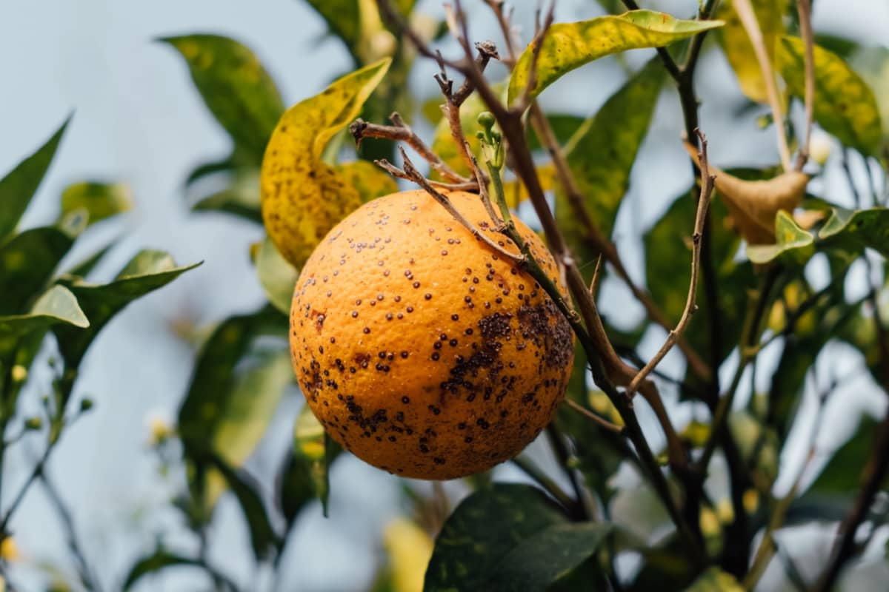
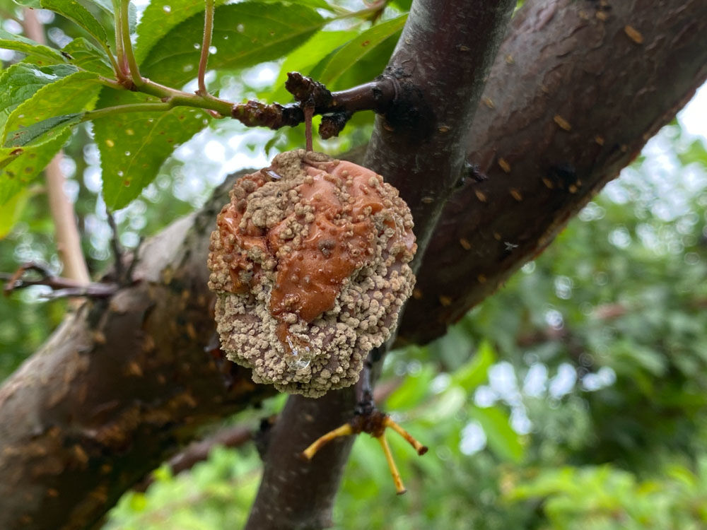
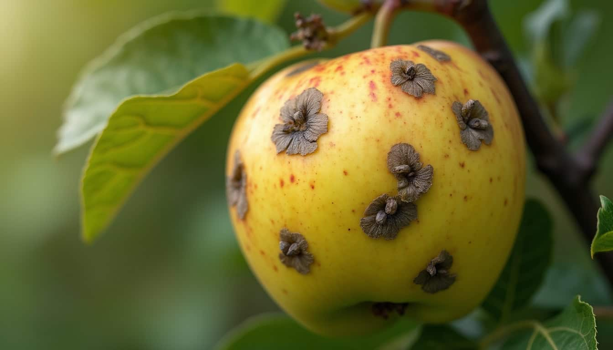

Specific diseases affecting fruit crops including citrus, stone fruits, and tropical varieties commonly grown in agricultural regions.

Bacterial disease affecting citrus trees causing raised lesions on leaves, stems, and fruit, leading to defoliation and fruit drop.

Fungal disease affecting stone fruits like peaches, plums, and cherries, causing fruit rot and blossom blight.

Fungal disease causing dark, scabby lesions on apple leaves and fruit, reducing quality and yield significantly.